Working after SPM
Worked at Chan & Associates law firm as a general clerk for 8 months, RM 50 per day. Handled files for disposal and separated recycling papers.
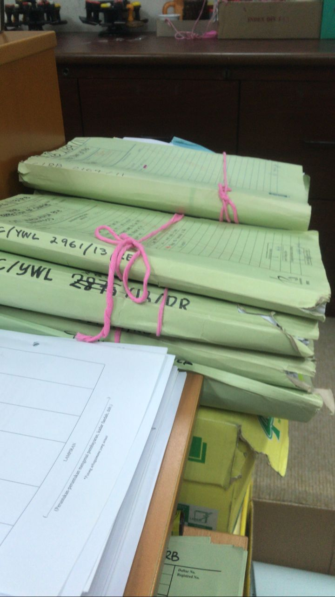 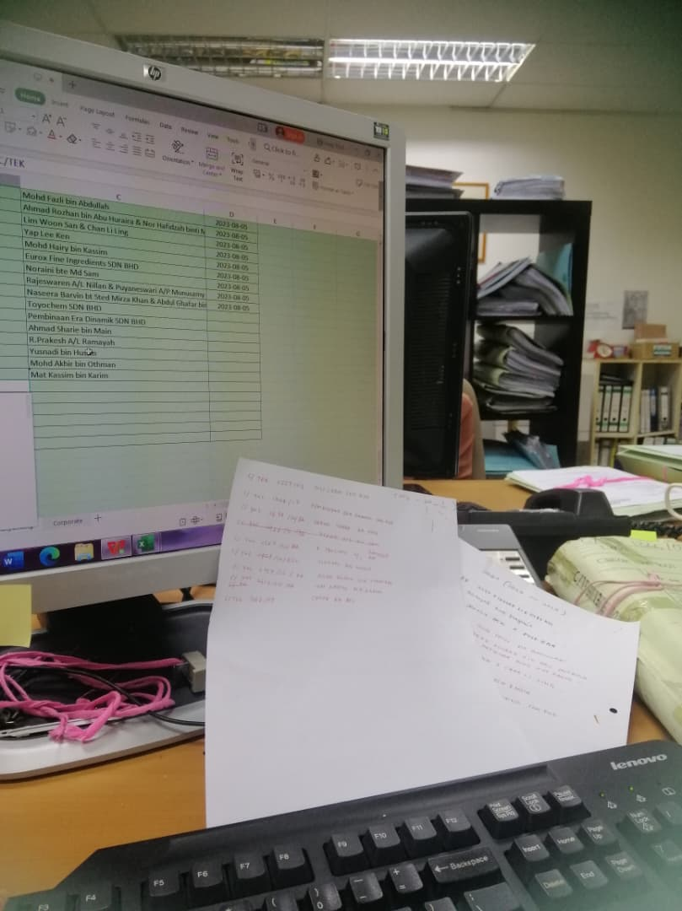 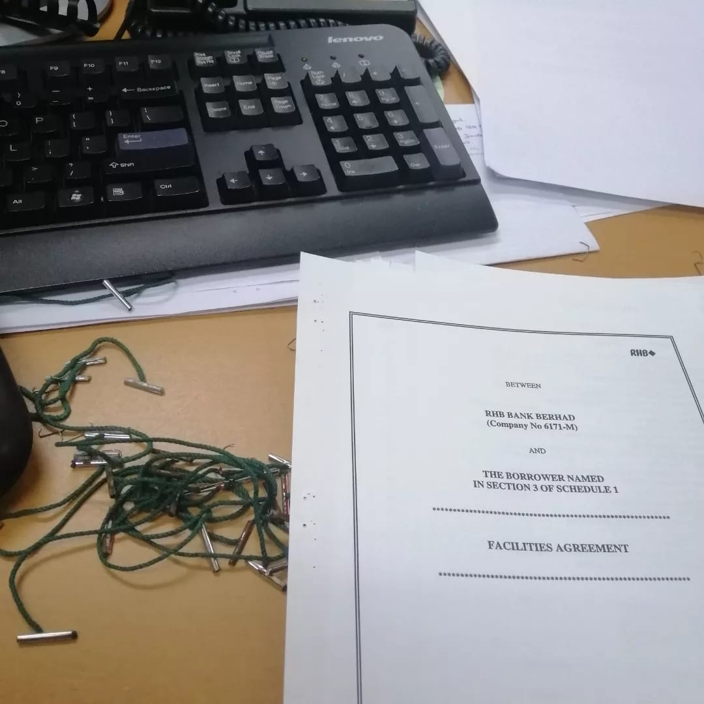
Worked at Chan & Associates law firm as a general clerk for 8 months, RM 50 per day. Handled files for disposal and separated recycling papers.
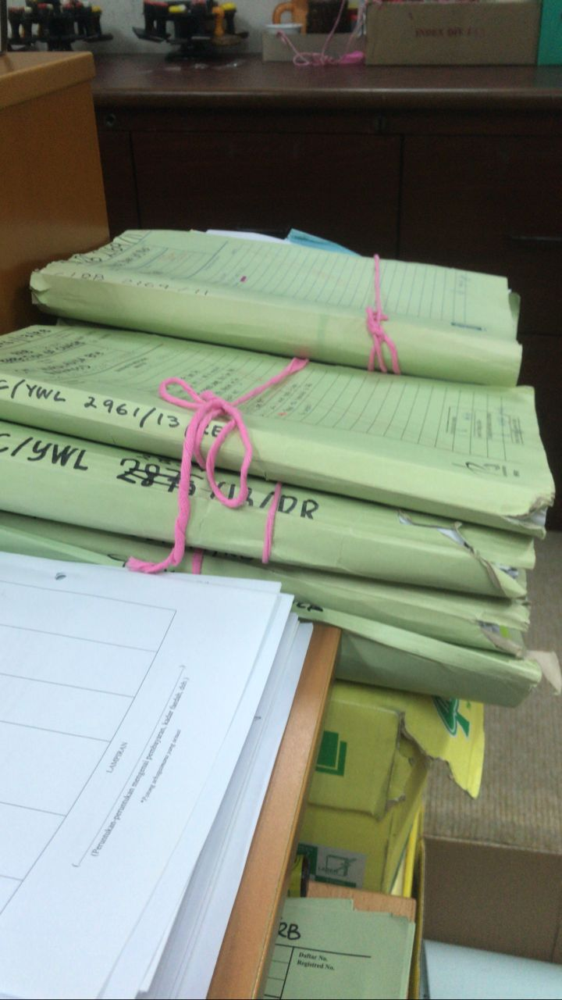 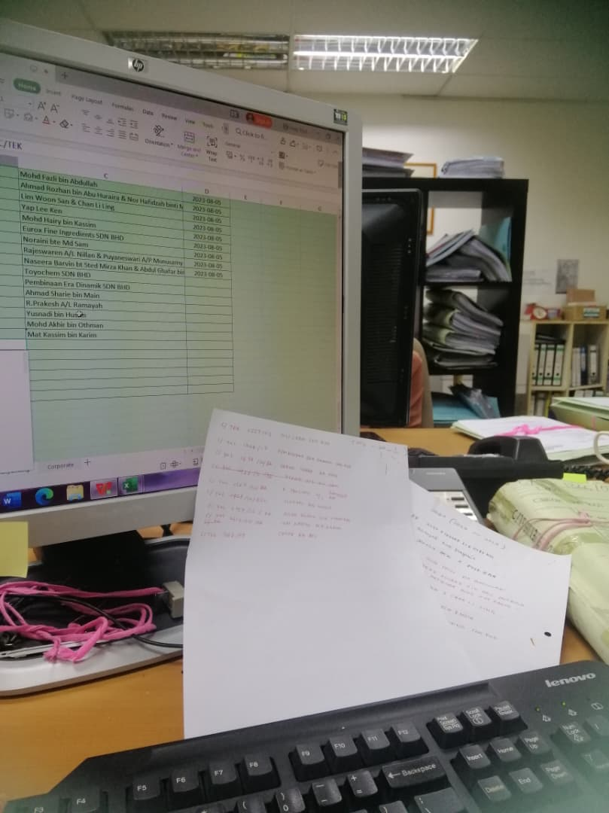 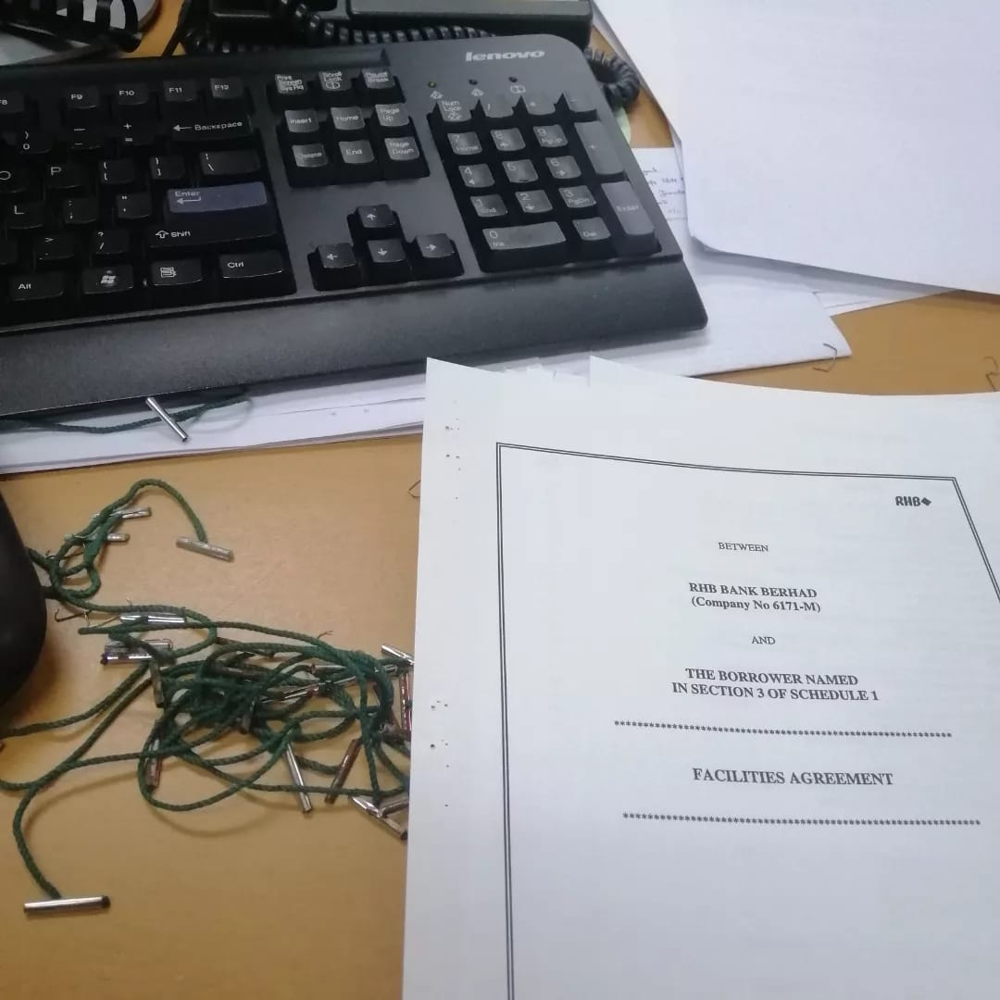
Completed a 2-month internship during semester break at the Patient Information Department, Hospital UiTM. Gained valuable experience in communication, administration, and professional skills while meeting new people.
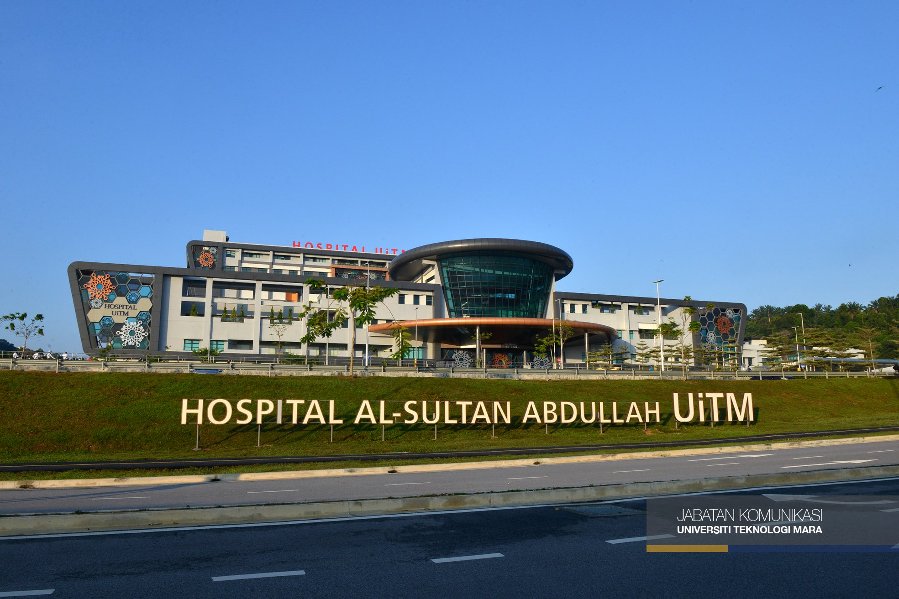 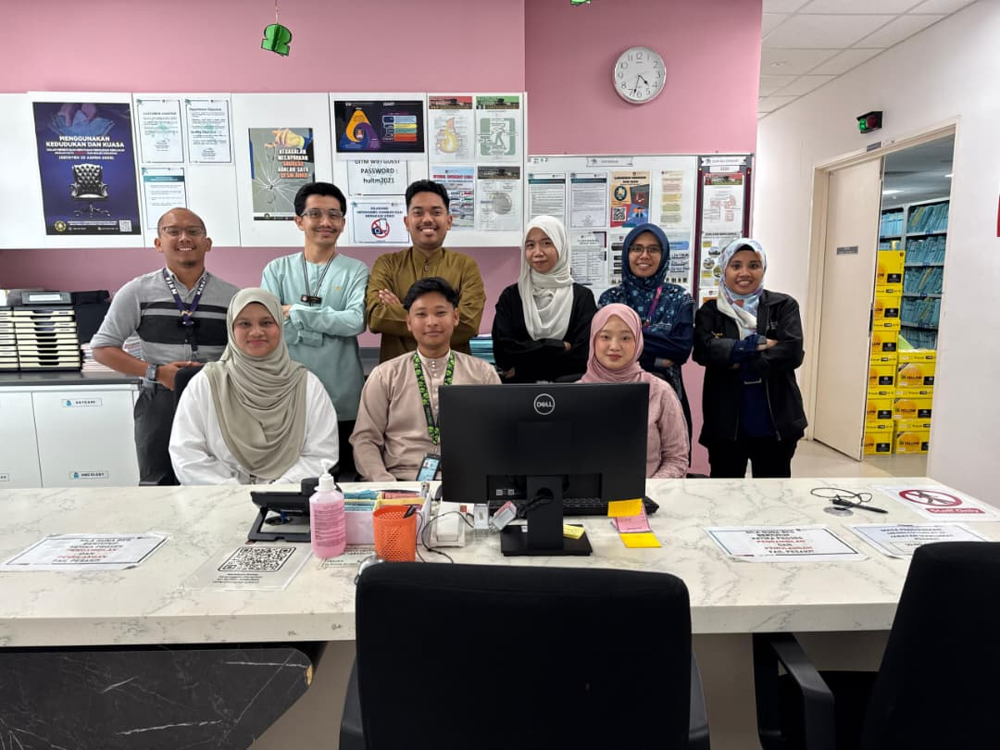Started a home-based business in February 2024 and continue until now. Developed skills in marketing, customer service, product management, and financial tracking.
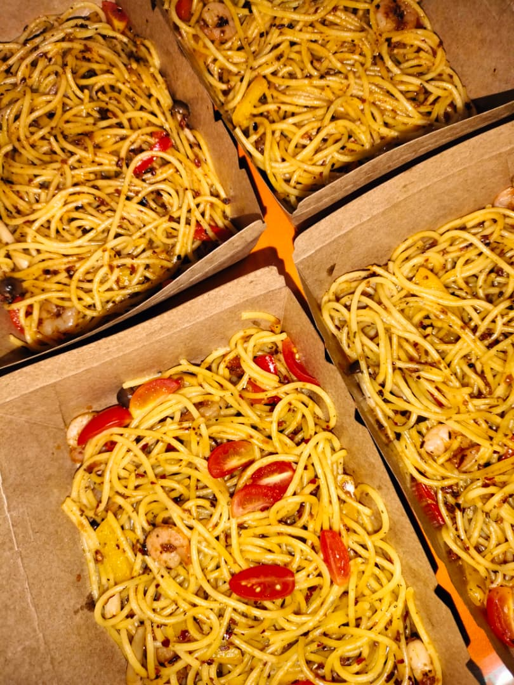 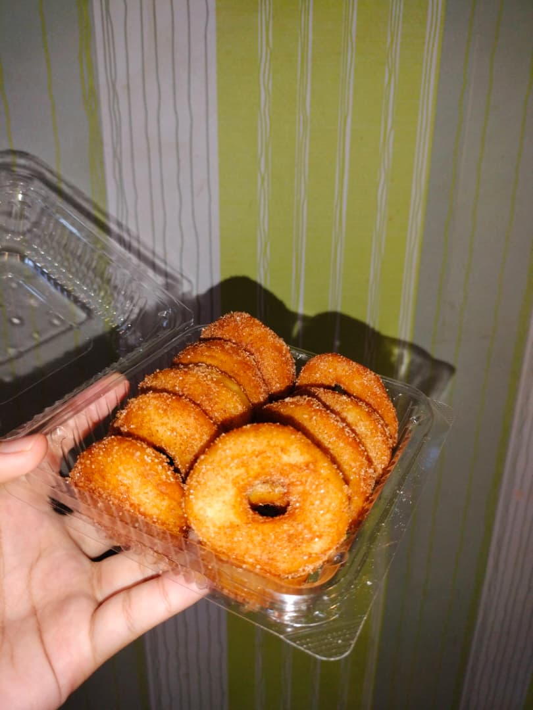 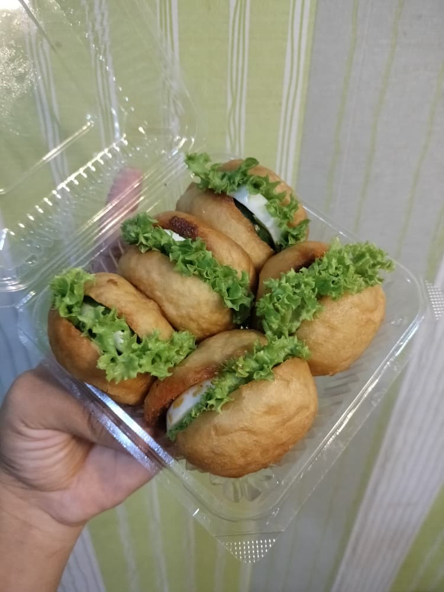 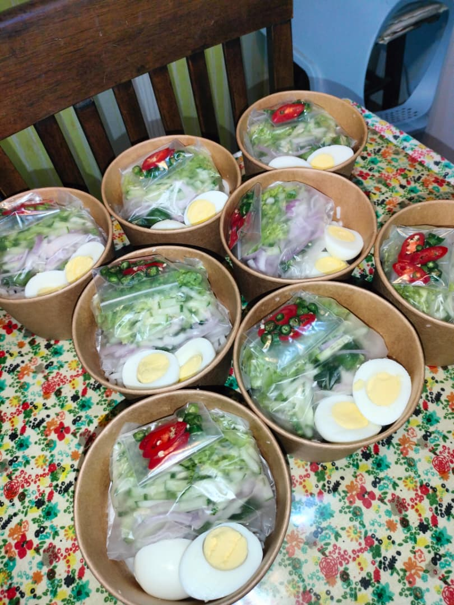| Education Level | Achievements | Year |
|---|---|---|
| Primary School |
• Appointed as Assistant Class Leader in Year 5 • Ranked Top 3 in class in Year 6 • Completed UPKK with 8A • Completed PSRA with Jayyid Jiddan • Completed UPSR with 4A, 2B, and 1C |
2012 – 2017 |
| Secondary School |
• Participated and won a National-Level Innovation Competition • Won 2nd place in the Selangor State-Level Marching Competition • Participated in Selangor State-Level Princess Day Digital Poster Competition • Represented the school in District-Level Ilmu Wahyu Quiz Competition • Completed Quran Skills Class (KKQ), Form 3 & Form 5 • Represented district at State-Level Ilmu Wahyu Quiz Competition • Successfully completed SPM: 1A+, 2A, 1A-, 3B, 2C+, 1D • Participated in MSSD Sabak Bernam Volleyball Championship, Form 2–5 • Participated in several bowling tournaments |
2018 – 2022 |
| University |
• Completed internship at Hospital UiTM • Served as Executive Committee of Kelab Inspirasi, appointed Head of Exco |
2023 – Present |